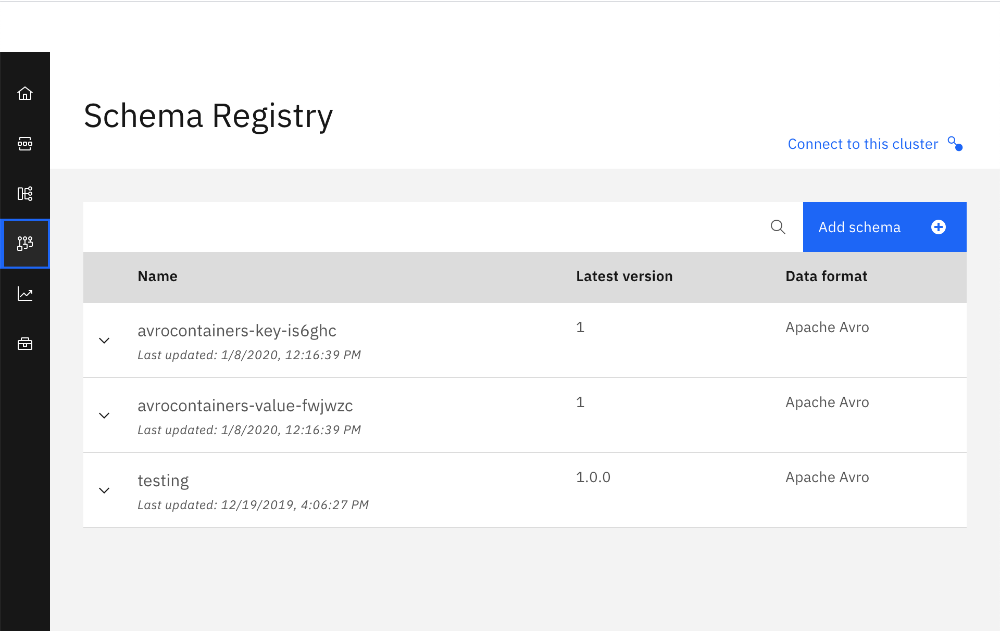

Apache Avro
Introduction
Here we explain the Apache Avro messaging integration we have done in one of our integration tests for the refarch-kc-container-ms component, which is part of the Reefer Containers reference implementation of the IBM Event Driven Architectures reference architecture. The Reefer Containers reference implementation is a simulation of what a container shipment process could look like in reality. From a manufacturer creating some goods to the delivery of those to a retailer, going through requesting a container, loading the goods into the container, finding a voyage for that container on a ship, monitoring the container's temperature and GPS location, delivering the container, unloading the goods, etc. As you can imagine, this scenario is ideal for an Event Driven architecture where we not only have a microservices based application but also the integration of these using Event Driven Architecture components (such as Kafka) and patterns (such as Saga, CQRS, Event Sourcing, etc).
What is Apache Avro
Avro is an open source data serialization system that helps with data exchange between systems, programming languages, and processing frameworks. Avro helps define a binary format for your data, as well as map it to the programming language of your choice.
Why Apache Avro
There are several websites that discuss the Apache Avro data serialization system benefits over other messaging data protocols. A simple google search will list dozens of them. Here, we will highlight just a few of those benefits from a Confluent blog post:
- It has a direct mapping to and from JSON
- It has a very compact format. The bulk of JSON, repeating every field name with every single record, is what makes JSON inefficient for high-volume usage.
- It is very fast.
- It has great bindings for a wide variety of programming languages so you can generate Java objects that make working with event data easier, but it does not require code generation so tools can be written generically for any data stream.
- It has a rich, extensible schema language defined in pure JSON
- It has the best notion of compatibility for evolving your data over time.
Avro, Kafka and Schema Registry
Avro relies on schemas. When Avro data is produced or read, the Avro schema for such piece of data is always present. This permits each datum to be written with no per-value overheads, making serialization both fast and small. An Avro schema defines the structure of the Avro data format. Schema Registry defines a scope in which schemas can evolve, and that scope is the subject. The name of the subject depends on the configured subject name strategy, which by default is set to derive subject name from topic name.
In our case, this Avro data are messages sent to a kafka topic. Each message is a key-value pair. Either the message key or the message value, or both, can be serialized as Avro. Integration with Schema Registry means that Kafka messages do not need to be written with the entire Avro schema. Instead, Kafka messages are written with the schema id. The producers writing the messages and the consumers reading the messages must be using the same Schema Registry to get the same mapping between a schema and schema id.
Kafka is used as Schema Registry storage backend. The special Kafka topic <kafkastore.topic> (default _schemas), with a single partition, is used as a highly available write ahead log. All schemas, subject/version and ID metadata, and compatibility settings are appended as messages to this log. A Schema Registry instance therefore both produces and consumes messages under the _schemas topic. It produces messages to the log when, for example, new schemas are registered under a subject, or when updates to compatibility settings are registered. Schema Registry consumes from the _schemas log in a background thread, and updates its local caches on consumption of each new _schemas message to reflect the newly added schema or compatibility setting. Updating local state from the Kafka log in this manner ensures durability, ordering, and easy recoverability.
How does it all work

When the producer sends a message/event to a Kafka topic for the first time, it sends the schema for that message/event to the Schema Registry. The Schema Registry registers this schema to the subject for the Kafka topic we want to send the message/event to, and returns the schema id to the producer. The producer caches this mapping between the schema and schema id for subsequent message writes, so it only contacts Schema Registry on the first message/event write (unless the schema has changed, that is evolved, when the schema registry will be contacted again for validation and storage of this new version of the schema). Kafka messages are written along with the schema id rather than with the entire data schema.
When a consumer reads this data, it sees the Avro schema id and sends a schema request to Schema Registry. Schema Registry retrieves the schema associated to that schema id, and returns the schema to the consumer. The consumer caches this mapping between the schema and schema id for subsequent message reads, so it only contacts Schema Registry on the first schema id read.
Our implementation
As mentioned in the introduction, the integration of the Apache Avro data serialization system has been done in one of the integration test for the refarch-kc-container-ms component of the Reefer Containers reference implementation of the IBM Event Driven Architectures reference architecture.
The refarch-kc-container-ms component will take care of the reefer containers status. From adding new reefers to the available containers list to assigning a container to a particular order and managing the status of that reefer throughout the shipment process aforementioned.
The integration tests for our Reefer Containers reference implementation can be found here. The integration tests are being developed in python and their main goal is to validate the successful deployment of the Reefer Containers reference implementation end-to-end.
The particular integration test (still under development) where we have integrated the Apache Avro serialization system can be found under the ContainersPython folder. More precisely, these are the files and folders involved in our implementation:
├── data_schemas
│ ├── container_event.avsc
│ ├── container_event_key.avsc
│ ├── container_event_payload.avsc
│ ├── container_event_type.avsc
│ ├── container_status.avsc
│ └── utils
│ └── avroEDAUtils.py
└── itg-tests
├── ContainersPython
│ ├── ConsumeAvroContainers.py
│ └── ContainerAvroProducer.py
└── kafka
├── KcAvroConsumer.py
└── KcAvroProducer.py
that will allow us to send container events into the containers Kafka topic and read from such topic.
By using these python scripts, we will be able to validate:
- Sending/Receiving Apache Avro encoded messages.
- Apache Avro data schema definitions for data correctness.
- Schema Registry for Apache Avro data schema management.
Data Schemas
Avro schemas are defined with JSON. An example of a Container Event for creating a new reefer container to the available list of containers for our reference application looks like:
{ "containerID": "container01", "timestamp": 1569410690, "type": "ContainerAdded", "payload": { "containerID": "container01", "type": "Reefer", "status": "Empty", "latitude": 37.8, "longitude": -122.25, "capacity": 110, "brand": "itg-brand" } }
An Avro schema could be a nested schema which allows us to have a smaller reusable data schemas to define bigger and more complex ones. This is the case for our Container Event data schema. For instance, the payload is defined on its own data schema (container_event_payload.avsc) which the Container Event data schema refers to:
{ "namespace": "ibm.eda.kc.container.event", "name": "payload", "type": "record", "fields": [ { "name": "containerID", "type": "string" }, { "name": "type", "type": "string" }, { "name": "status", "type": "ibm.eda.kc.container.status" }, { "name": "latitude", "type": "float" }, { "name": "longitude", "type": "float" }, { "name": "capacity", "type": "int" }, { "name": "brand", "type": "string" } ] }
As you can see, the status attribute of the payload is yet another data schema itself which, in this case, is of type enum:
{ "namespace": "ibm.eda.kc.container", "name": "status", "type": "enum", "symbols": [ "Loaded", "Empty", "Unassignable", "PartiallyLoaded" ] }
All the different data schemas for a Container Event can be found under the data_schemas folder.
In that folder we have also developed a util script (avroEDAUtils.py) to be able to construct the final Container Event data schema that is needed by our producer:
def getContainerEventSchema(schema_files_location): # Read all the schemas needed in order to produce the final Container Event Schema known_schemas = avro.schema.Names() container_status_schema = LoadAvsc(schema_files_location + "container_status.avsc", known_schemas) container_event_payload_schema = LoadAvsc(schema_files_location + "container_event_payload.avsc", known_schemas) container_event_type_schema = LoadAvsc(schema_files_location + "container_event_type.avsc", known_schemas) container_event_schema = LoadAvsc(schema_files_location + "container_event.avsc", known_schemas) return container_event_schema def LoadAvsc(file_path, names=None): # Load avsc file # file_path: path to schema file # names(optional): avro.schema.Names object file_text = open(file_path).read() json_data = json.loads(file_text) schema = avro.schema.SchemaFromJSONData(json_data, names) return schema
See it in action
Here, we are going to see how data schemas help with data correctness. Using the payload for our container messages/events as the example, this is the output of a correct message being sent:
--- Container event to be published: ---
{
"containerID": "container01",
"type": "Reefer",
"status": "Empty",
"latitude": 37.8,
"longitude": -122.25,
"capacity": 110,
"brand": "itg-brand"
}
Message delivered to containers [0]
However, if we try to send a payload where, for instance the container ID is an integer rather than a string, we will get an avro.io.AvroTypeException:
avro.io.AvroTypeException: The datum {'containerID': 12345, 'type': 'Reefer', 'status': 'Empty', 'latitude': 37.8, 'longitude': -122.25, 'capacity': 110, 'brand': 'itg-brand'} is not an example of the schema { "type": { "type": "record", "name": "payload", "namespace": "ibm.eda.kc.container.event", "fields": [ { "type": "string", "name": "containerID" }, { "type": "string", "name": "type" }, { "type": { "type": "enum", "name": "status", "namespace": "ibm.eda.kc.container", "symbols": [ "Loaded", "Empty", "Unassignable", "PartiallyLoaded" ] }, "name": "status" }, { "type": "float", "name": "latitude" }, { "type": "float", "name": "longitude" }, { "type": "int", "name": "capacity" }, { "type": "string", "name": "brand" } ] }
Producer and Consumer
The python scripts developed to implement a producer and consumer to a kafka topic that sends Avro messages whose data schemas are managed by a schema registry are:
└── itg-tests
├── ContainersPython
│ ├── ConsumeAvroContainers.py
│ └── ContainerAvroProducer.py
└── kafka
├── KcAvroConsumer.py
└── KcAvroProducer.py
We have used the confluent_kafka avro libraries to implement our producer and consumer.
from confluent_kafka.avro import AvroProducer, AvroConsumer
Producer
We create our KafkaProducer object where we define some of the AvroProducer options such as the schema registry url for data schema registration and management. But it is not until we call the prepareProducer method that we actually create the AvroProducer with that schema registry to be used as well as the data schemas for the key and value of our Container Event to be sent.
Finally, in the publishEvent method we send a value plus a key to a kafka topic.
producer when we call prepareProducer
import json from confluent_kafka import KafkaError from confluent_kafka.avro import AvroProducer class KafkaProducer: def __init__(self,kafka_brokers = "",kafka_apikey = "",schema_registry_url = ""): self.kafka_brokers = kafka_brokers self.kafka_apikey = kafka_apikey self.schema_registry_url = schema_registry_url def prepareProducer(self,groupID = "pythonproducers",key_schema = "", value_schema = ""): options ={ 'bootstrap.servers': self.kafka_brokers, 'schema.registry.url': self.schema_registry_url, 'group.id': groupID } self.producer = AvroProducer(options,default_key_schema=key_schema,default_value_schema=value_schema) def publishEvent(self, topicName, value, key): # Important: value DOES NOT come in JSON format from ContainerAvroProducer.py. Therefore, we must convert it to JSON format first self.producer.produce(topic=topicName,value=json.loads(value),key=json.loads(value)[key], callback=self.delivery_report) self.producer.flush()
To use this class you need to do the following steps:
# load schema definitions for key and value from utils.avroEDAUtils import getContainerEventSchema, getContainerKeySchema container_event_value_schema = getContainerEventSchema("/data_schemas/") container_event_key_schema = getContainerKeySchema("/data_schemas/") # Create a producer with the schema registry URL end point kp = KafkaProducer(KAFKA_ENV,KAFKA_BROKERS,KAFKA_APIKEY,SCHEMA_REGISTRY_URL) kp.prepareProducer("ContainerProducerPython",container_event_key_schema,container_event_value_schema) # loop on publishing events kp.publishEvent(TOPIC_NAME,container_event)
Consumer
Similarly to the producer, when we create a KafkaConsumer object we are just setting some of its attributes such as the kafka topic we will listen to and the schema registry url the producer will retrieve the data schemas from based on the schema ids messages comes with. It is only when we call the prepareConsumer method that we actually create the AvroConsumer and subscribe it to the intended kafka topic.
import json from confluent_kafka.avro import AvroConsumer class KafkaConsumer: def __init__(self, kafka_brokers = "", kafka_apikey = "", topic_name = "", schema_registry_url = ""): self.kafka_brokers = kafka_brokers self.kafka_apikey = kafka_apikey self.topic_name = topic_name self.schema_registry_url = schema_registry_url def prepareConsumer(self, groupID = "pythonconsumers"): options ={ 'bootstrap.servers': self.kafka_brokers, 'group.id': groupID, 'auto.offset.reset': 'earliest', 'schema.registry.url': self.schema_registry_url, } self.consumer = AvroConsumer(options) self.consumer.subscribe([self.topic_name]) # ...
Schema registry
We have worked with the Confluent schema registry as well as the IBM Event Streams Schema Registry.
Confluent
The integration of the schema registry with your kafka broker is quite easy. In fact, all you need is to provide the schema registry with your zookeeper cluster url and give your schema registry a hostname: https://docs.confluent.io/current/installation/docker/config-reference.html#schema-registry-configuration
Once you have your schema registry up and running, this provides a rich API endpoint to operate with: https://docs.confluent.io/current/schema-registry/using.html#common-sr-usage-examples
For example:
Let's assume we have created a new kafka topic called avrotest for testing our work. And let's also assume we are sending persona messages/events whose data schema is the following:
{ "namespace": "avro.test", "name": "persona", "type": "record", "fields" : [ { "name" : "name", "type" : "string" }, { "name" : "age", "type" : "int" }, { "name" : "gender", "type" : "string" } ] }
- Get the subjects (that is, the kafka topics to which we have a schema registered against. As explained before, we either have registered the schema manually ourselves or the Avro producer has registered it when we have sent the first message)
curl -X GET http://localhost:8081/subjects ["avrotest-value","avrotest-key"]
- Get versions for a subject:
curl -X GET http://localhost:8081/subjects/avrotest-value/versions [1]
- Get a specific version:
curl -X GET http://localhost:8081/subjects/avrotest-value/versions/1/ { "subject": "avrotest-value", "version": 1, "id": 1, "schema": "{\"type\":\"record\",\"name\":\"persona\",\"namespace\":\"avro.test\",\"fields\":[{\"name\":\"name\",\"type\":\"string\"},{\"name\":\"age\",\"type\":\"int\"},{\"name\":\"gender\",\"type\":\"string\"}]}" }
- Get the schema of a specific subject version:
curl -X GET http://localhost:8081/subjects/avrotest-value/versions/1/schema { "type": "record", "name": "persona", "namespace": "avro.test", "fields": [ { "name": "name", "type": "string" }, { "name": "age", "type": "int" }, { "name": "gender", "type": "string" } ] }
- Get the schema of a specific subject latest version:
curl -X GET http://localhost:8081/subjects/avrotest-value/versions/latest/schema { "type": "record", "name": "persona", "namespace": "avro.test", "fields": [ { "name": "name", "type": "string" }, { "name": "age", "type": "int" }, { "name": "gender", "type": "string" } ] }
Event Streams
On the other hand, you don't need to do any setup process in order to use the Schema Registry that comes with IBM Event Streams. You simply need to provide your applications with the configuration that the IBM Event Streams provides you with
UI
Log into the IBM Event Streams UI and go to the topics section on the left hand side panel. Once there you will see a Connect to this cluster option on the top right corner:

It will display a card with the information you need in order to use IBM Event Streams as well as the Schema Registry it comes with. It also contains a Sample Code section where you can get the sample code for how to configure a Java application:

Once you have configured your application with your IBM Event Streams and Schema Registry information to be able to use and access these, you simple produce and consume Avro encoded messages as you would with Confluent.
You can see the Avro schemas your producers have got registered with IBM Event Streams by clicking on the schema registry option on the right hand panel:

You can click in each of them to actually see their definition and version:

You can also use the IBM Event Streams UI to create new schemas.
CLI
We can also use the cloudctl CLI and its IBM Event Streams es plugin to access and manage our instance of IBM Event Streams. To install the CLI and plugin, log into your IBM Event Streams instance, click on toolbox:

then click on IBM Event Streams command-line interface and follow the instructions in there:

Once you have the CLI and plugin install, simply login to your OCP cluster and initialize your IBM Event Streams es plugin:
$ cloudctl login -a <ICP console endpoint> -u <user> -p <password> Authenticating... OK Targeted account mycluster Account Enter a namespace > eventstreams Targeted namespace eventstreams Configuring kubectl ... Property "clusters.mycluster" unset. Property "users.mycluster-user" unset. Property "contexts.mycluster-context" unset. Cluster "mycluster" set. User "mycluster-user" set. Context "mycluster-context" created. Switched to context "mycluster-context". OK Configuring helm: /Users/user/.helm OK $ cloudctl es init ICP endpoint: https://icp-console.apps.green.ocp.csplab.local Namespace: eventstreams Helm release: eventstream140 Event Streams API endpoint: https://eventstream140-ibm-es-rest-route-eventstreams.apps.green.ocp.csplab.local Event Streams API status: OK Event Streams SSL client auth endpoint: https://eventstream140-ibm-es-clientauth-route-eventstreams.apps.green.ocp.csplab.local Event Streams UI address: https://eventstream140-ibm-es-ui-route-eventstreams.apps.green.ocp.csplab.local Event Streams bootstrap address: eventstream140-ibm-es-proxy-route-bootstrap-eventstreams.apps.green.ocp.csplab.local:443 OK
We can already see that once we get the IBM Event Streams es plugin initialized, we are provided with the endpoint information to interact with IBM Event Streams and its Schema Registry.
We can now see the Avro schemas we have registered:
$ cloudctl es schemas Schema State Latest version Latest version ID Updated avrocontainers-key-is6ghc active 1 1 Wed, 08 Jan 2020 11:16:39 UTC avrocontainers-value-fwjwzc active 1 1 Wed, 08 Jan 2020 11:16:39 UTC testing active 1.0.0 1 Thu, 19 Dec 2019 15:06:27 UTC OK $ cloudctl es schema avrocontainers-key-is6ghc Schema avrocontainers-key-is6ghc is active. Version Version ID Schema State Updated Comment 1 1 avrocontainers-key-is6ghc active Wed, 08 Jan 2020 11:16:39 UTC OK $ cloudctl es schema avrocontainers-key-is6ghc --json { "id": "avrocontainers-key-is6ghc", "name": "avrocontainers-key-is6ghc", "state": { "state": "active" }, "enabled": true, "versions": [ { "id": 1, "name": "1", "date": "2020-01-08T11:16:39.962Z", "state": { "state": "active" }, "enabled": true } ] }
Finally, explore all the options you have to interact with the IBM Event Streams Schema Registry:
$ cloudctl es --help | grep schema schema Display details of a schema. schema-add Add a new schema or a new version of a schema to the registry. schema-modify Modify an entire schema or a specific schema version schema-remove Remove a schema or a version of a schema from the registry. schema-verify Verify a schema file. schemas List the schemas in the registry. schemas-export Export the schemas in the registry to a zip file. schemas-import Import a set of schemas into the registry from a zip file.
Data evolution
So far we have seen what Avro is, what a data schema is, what a schema registry is and how this all works together. From creating a data schema for your messages/events to comply with to how the schema registry and data schemas work together. And we have also seen the code for doing all this, from the python code to send and receive Avro encoded messages based on their schemas to the rich API the Confluent schema registry provides to interact with.
However, we have said little about the need for data to evolve. When you design an Event Driven architecture for your application (by applying Event Storming or Domain Driven Design for example), it is very hard to come up with data structures/schemas that will not need to evolve/change in time. That is, your data like your use or business cases may need to evolve. As a result, Avro data schemas must be somehow flexible to allow your data to evolve along with your application and use cases.
But it is not as easy as adding or removing data that travels in your events/messages or modifying the type of such data. And one of the reasons for this is that Kafka (or any other type of event broker) is many times used as the source of truth. That is, a place that you can trust as to what has happened. Hence, Kafka will serve as the event source of truth where all the events (that is, data) that happened (which could be bank transactions, communications, etc) will get stored (sometimes up to hundreds of years) and will be able to be replayed if needed. As a result, there must be a data schema management and data schema evolution put in place that allow the compatibility of old and new data schemas and, in fact, data at the end of the day.
There are mainly three types of data compatibility:
- Backward
- Forward
- Full
Backward compatibility
Backward compatibility means that consumers using the new schema can read data produced with the last schema.
Using the persona data schema already mentioned throughout this readme, what if we decide to change the data schema to add a new attribute such as place of birth? That is, the new schema would look like:
{ "namespace": "avro.test", "name": "persona", "type": "record", "fields" : [ { "name" : "name", "type" : "string" }, { "name" : "age", "type" : "int" }, { "name" : "gender", "type" : "string" }, { "name" : "place_of_birth", "type" : "string" } ] }
here is the output when we try to produce an event/message with the above data schema:
### Persona event to be published: ### {'name': 'david', 'age': '25', 'gender': 'male', 'place_of_birth': 'USA'} ###################################### Traceback (most recent call last): File "ContainerAvroProducer.py", line 73, in <module> kp.publishEvent(TOPIC_NAME,container_event,"1") File "/home/kafka/KcAvroProducer.py", line 42, in publishEvent self.producer.produce(topic=topicName,value=json.loads(value),key=json.loads(key), callback=self.delivery_report) File "/root/.local/lib/python3.7/site-packages/confluent_kafka/avro/__init__.py", line 80, in produce value = self._serializer.encode_record_with_schema(topic, value_schema, value) File "/root/.local/lib/python3.7/site-packages/confluent_kafka/avro/serializer/message_serializer.py", line 105, in encode_record_with_schema schema_id = self.registry_client.register(subject, schema) File "/root/.local/lib/python3.7/site-packages/confluent_kafka/avro/cached_schema_registry_client.py", line 223, in register raise ClientError("Invalid Avro schema:" + str(code)) confluent_kafka.avro.error.ClientError: Invalid Avro schema:422
And the reason for such error is that, because new schemas must be backward compatible (default compatibility mode for Confluent kafka data schemas topics), we can't just simply add a new attribute. Consumers using the new schema must be able to read data produced with the last schema. That is, if a consumer was to read old messages with the schema above, it would expect the place_of_birth attribute and its value on these old messages. However, the messages were produced with the old schema that did not enforce such attribute. Hence, the problem.
We can also check the compatibility of this new schema using the API:
curl -X POST -H "Content-Type: application/vnd.schemaregistry.v1+json" --data '{"schema": "{\"type\":\"record\", \"name\":\"persona\", \"namespace\":\"avro.test\", \"fields\":[{\"name\":\"name\",\"type\":\"string\"}, {\"name\":\"age\",\"type\":\"int\"}, {\"name\":\"gender\",\"type\":\"string\"}, {\"name\":\"place_of_birth\",\"type\":\"string\"}]}"}' http://localhost:8081/compatibility/subjects/avrotest-value/versions/latest {"is_compatible":false}
How do we evolve our schema to add new attributes in a way that the schema is BACKWARD compatible? Adding a default value for such attribute so the consumer can use it when reading old messages that were produced without that attribute:
{ "namespace": "avro.test", "name": "persona", "type": "record", "fields" : [ { "name" : "name", "type" : "string" }, { "name" : "age", "type" : "int" }, { "name" : "gender", "type" : "string" }, { "name" : "place_of_birth", "type" : "string", "default": "nonDefined" } ] }
Rather than changing it straight in the code, we can do some sort of validation through the API:
curl -X POST -H "Content-Type: application/vnd.schemaregistry.v1+json" --data '{"schema": "{\"type\":\"record\", \"name\":\"persona\", \"namespace\":\"avro.test\", \"fields\":[{\"name\":\"name\",\"type\":\"string\"}, {\"name\":\"age\",\"type\":\"int\"}, {\"name\":\"gender\",\"type\":\"string\"}, {\"name\":\"place_of_birth\",\"type\":\"string\", \"default\":\"nonDefined\"}]}"}' http://localhost:8081/compatibility/subjects/avrotest-value/versions/latest {"is_compatible":true}
We now can evolve our data schema to enforce a new attribute with our new messages/events being produced but making sure the consumer is able to read old messages that do not contain such attribute. We do so by sending a new persona event/message along with this new data schema. This will make the schema registry to register the new data schema.
We can validate the new data schema version has been registered by using the schema registry API:
curl -X GET http://localhost:8081/subjects/avrotest-value/versions [1,2] curl -X GET http://localhost:8081/subjects/avrotest-value/versions/latest/schema {"type":"record", "name":"persona", "namespace":"avro.test", "fields":[{"name":"name","type":"string"}, {"name":"age","type":"int"}, {"name":"gender","type":"string"}, {"name":"place_of_birth","type":"string","default":"nonDefined"}]}
What if we want to remove an attribute from our persona events/messages now? Well, this one is easy since the Avro consumer will simply ignore/drop all those attributes in the old persona events/messages that are not defined in the new data schema and just take in those that are defined.
Let's try to remove the gender attribute:
curl -X POST -H "Content-Type: application/vnd.schemaregistry.v1+json" --data '{"schema": "{\"type\":\"record\", \"name\":\"persona\", \"namespace\":\"avro.test\", \"fields\":[{\"name\":\"name\",\"type\":\"string\"}, {\"name\":\"age\",\"type\":\"int\"}, {\"name\":\"place_of_birth\",\"type\":\"string\", \"default\":\"nonDefined\"}]}"}' http://localhost:8081/compatibility/subjects/avrotest-value/versions/latest {"is_compatible":true}
Forward compatibility
Forwards compatibility means that data produced with a new schema can be read by consumers using the last schema.
First, let's set the compatibility type to FORWARD (default compatibility mode in Confluent kafka is backward):
curl -X PUT -H "Content-Type: application/vnd.schemaregistry.v1+json" --data '{"compatibility": "FORWARD"}' http://localhost:8081/config {"compatibility":"FORWARD"}
curl -X GET http://localhost:8081/config {"compatibilityLevel":"FORWARD"}
Now, how about removing an attribute when the compatibility type configured is set to FORWARD? In this case, it is not as simple as removing the attribute from the new schema as the consumer will expect such attribute that the producer will not add to the events/messages. Let's try to remove the gender attribute from the persona messages/events:
curl -X POST -H "Content-Type: application/vnd.schemaregistry.v1+json" --data '{"schema": "{\"type\":\"record\", \"name\":\"persona\", \"namespace\":\"avro.test\", \"fields\":[{\"name\":\"name\",\"type\":\"string\"}, {\"name\":\"age\",\"type\":\"int\"}, {\"name\":\"place_of_birth\",\"type\":\"string\", \"default\":\"nonDefined\"}]}"}' http://localhost:8081/compatibility/subjects/avrotest-value/versions/latest {"is_compatible":false}
So, how can we produce new persona events/messages (without the gender attribute) that are compatible with the last data schema used by consumers (that expects an attribute called gender)?
The trick here is to first register an "intermediate" data schema that adds a default value to gender if it is not defined. This way, the "intermediate" data schema will become the last data schema for the consumers and when we producer sent messages that do not contain the gender attribute, the consumer will know what to do:
Intermediate schema:
curl -X POST -H "Content-Type: application/vnd.schemaregistry.v1+json" --data '{"schema": "{\"type\":\"record\", \"name\":\"persona\", \"namespace\":\"avro.test\", \"fields\":[{\"name\":\"name\",\"type\":\"string\"}, {\"name\":\"age\",\"type\":\"int\"}, {\"name\":\"gender\",\"type\": \"string\",\"default\": \"nonProvided\"}, {\"name\":\"place_of_birth\",\"type\":\"string\", \"default\":\"nonDefined\"}]}"}' http://localhost:8081/compatibility/subjects/avrotest-value/versions/latest {"is_compatible":true}
We register this data schema either by sending it along with a message/event using our producer or we simply register it using the schema registry API. Once we have this "intermediate" schema registered that will actually become the last data schema for the consumer, we check if our end goal data schema without the gender attribute is forward compatible or not:
curl -X POST -H "Content-Type: application/vnd.schemaregistry.v1+json" --data '{"schema": "{\"type\":\"record\", \"name\":\"persona\", \"namespace\":\"avro.test\", \"fields\":[{\"name\":\"name\",\"type\":\"string\"}, {\"name\":\"age\",\"type\":\"int\"}, {\"name\":\"place_of_birth\",\"type\":\"string\", \"default\":\"nonDefined\"}]}"}' http://localhost:8081/compatibility/subjects/avrotest-value/versions/latest {"is_compatible":true}
If we send a persona message that does not contain the gender attribute now, we should succeed:
### Persona event to be published: ### {'name': 'david', 'age': 25, 'place_of_birth': 'USA'} ###################################### Message delivered to avrotest [0]
Contrary to the backward compatibility, in forward compatibility, adding a new attribute to your events/messages is not a problem because the consumers will simply ignore/drop this new attribute since the schema they are still using (the last one) does not include it. So let's say we want to add a new attribute called hair to represent the color of a persona's hair:
curl -X POST -H "Content-Type: application/vnd.schemaregistry.v1+json" --data '{"schema": "{\"type\":\"record\", \"name\":\"persona\", \"namespace\":\"avro.test\", \"fields\":[{\"name\":\"name\",\"type\":\"string\"}, {\"name\":\"age\",\"type\":\"int\"}, {\"name\":\"place_of_birth\",\"type\":\"string\", \"default\":\"nonDefined\"}, {\"name\":\"hair\",\"type\":\"string\"}]}"}' http://localhost:8081/compatibility/subjects/avrotest-value/versions/latest {"is_compatible":true}
We see there is no problem at all and if we try to send a message/event containing this new attribute along with the new schema:
### Persona event to be published: ### {'name': 'John', 'age': 25, 'place_of_birth': 'London', 'hair': 'brown'} ###################################### Message delivered to avrotest [0]
The new data schema is registered and new messages/events complying with that new data schema are sent with no problem at all.
Full compatibility
Full compatibility means data schemas are both backward and forward compatible. Data schemas evolve in a fully compatible way: old data can be read with the new data schema, and new data can also be read with the last data schema.
In some data formats, such as JSON, there are no full-compatible changes. Every modification is either only forward or only backward compatible. But in other data formats, like Avro, you can define fields with default values. In that case adding or removing a field with a default value is a fully compatible change.
So let's see if we can delete the place_of_birth attribute, the only attribute in our data schema that defines a default value:
curl -X POST -H "Content-Type: application/vnd.schemaregistry.v1+json" --data '{"schema": "{\"type\":\"record\", \"name\":\"persona\", \"namespace\":\"avro.test\", \"fields\":[{\"name\":\"name\",\"type\":\"string\"}, {\"name\":\"age\",\"type\":\"int\"}, {\"name\":\"hair\",\"type\":\"string\"}]}"}' http://localhost:8081/compatibility/subjects/avrotest-value/versions/latest {"is_compatible":true}
It looks like it may work. Let's send a message without that attribute along with the new data schema:
### Persona event to be published: ### {'name': 'John', 'age': 25, 'hair': 'brown'} ###################################### Message delivered to avrotest [0]
Let's now try to add an attribute with a default value. Let's say we want to add an attribute for the hobbies of a persona whose default value will be none
curl -X POST -H "Content-Type: application/vnd.schemaregistry.v1+json" --data '{"schema": "{\"type\":\"record\", \"name\":\"persona\", \"namespace\":\"avro.test\", \"fields\":[{\"name\":\"name\",\"type\":\"string\"}, {\"name\":\"age\",\"type\":\"int\"}, {\"name\":\"hair\",\"type\":\"string\"}, {\"name\":\"hobbies\",\"type\":\"string\", \"default\":\"none\"}]}"}' ßhttp://localhost:8081/compatibility/subjects/avrotest-value/versions/latest {"is_compatible":true}
Let's send a message along with the new data schema to be completely sure:
### Persona event to be published: ### {'name': 'John', 'age': 25, 'hair': 'brown', 'hobbies': 'dance,music,food'} ###################################### Message delivered to avrotest [0]
As expected, it did work.
We now know how a data schema can evolve when full compatibility is required. That is, we know what attributes can be removed and how to add new attributes.
Compendium
Here are some links we have visited to carry out our work and found interesting to read: